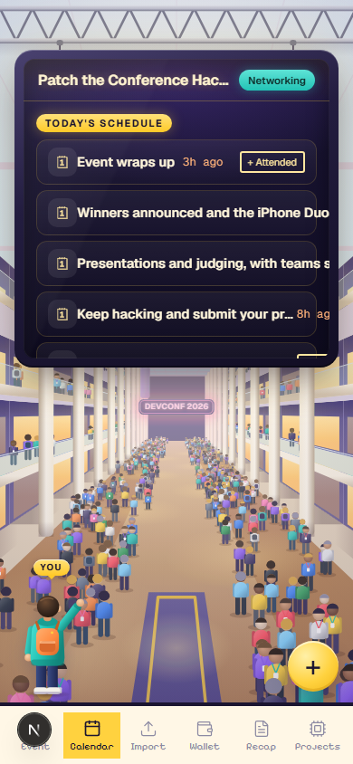
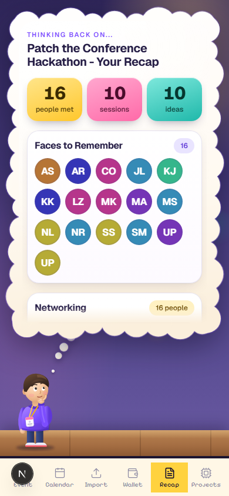
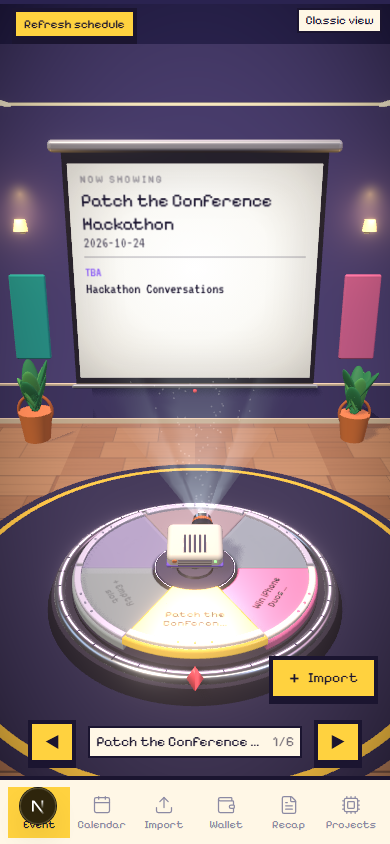
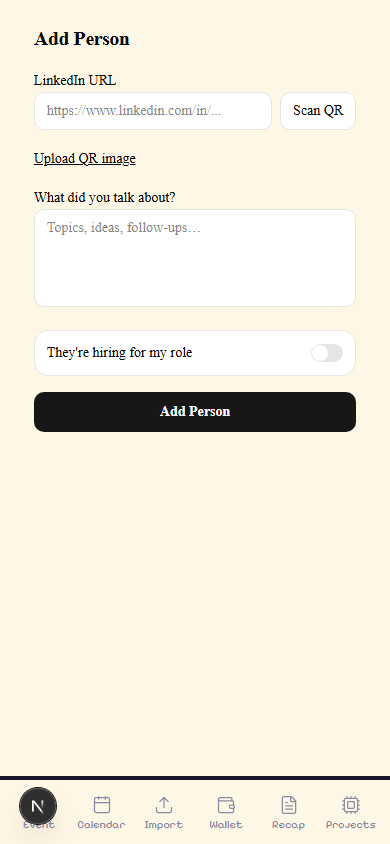
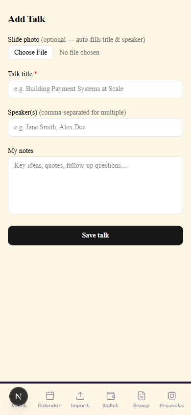
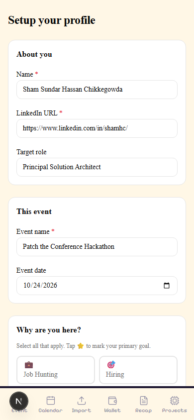

What It Does
Debrief is the networking layer you build once and run at every conference. The data in the app the day after the hackathon was from the hackathon itself — real people, real conversations, real ideas. We ate our own food and found the gaps in real time.
- Paste the event URL
- Bright Data fetches all speakers
- Graph scores who to meet and why
- Ranked meet plan with AI openers in 30 seconds
- Snap a slide photo → session identified
- Notes linked to person + session + idea
- Add anyone via LinkedIn URL or QR
- Live schedule refresh if organiser changes it
- Full day timeline — sessions, people, ideas
- Faces to Remember with avatar grid
- AI follow-up drafts from your actual notes
- Everything queryable via Cypher forever
Graph Path Explainability
Every recommendation shows the path: Me → CONNECTED → Alex → WORKS_AT → Stripe. You see exactly why someone was ranked.
Mock Mode — Zero API Keys
USE_MOCK_DATA=true returns fixture JSON on every route. Full demo without FalkorDB, OpenAI, or Bright Data credentials.
Shared Graph State
All teammates point to one FalkorDB Cloud instance. One person adds a speaker — everyone's meet plan updates immediately.
Import Anything
Slide photos, coupons, business cards, QR codes, Zoom VTT transcripts. All classified and saved to the right graph node.
Idempotent Schedule Refresh
The event URL is stored. One tap re-fetches the live page and MERGEs new sessions — no duplicates, no data loss.
Your Notes Stay Yours
HAS_NOTE is always CREATE, never overwritten. AI context lives in a separate Context node. Your words and the AI's words never mix.
App Screens
Mobile-first at 390px. Every page loads against real data from the hackathon day.






All screenshots use real hackathon data — the graph running live on GCP FalkorDB with 2,307 nodes and 2,677 relationships from the actual Patch the Conference Hackathon day. Nothing is mocked up or fabricated for the screenshots.
Architecture
Three layers: a mobile-first Next.js frontend, external enrichment services, and FalkorDB as the memory and computation engine. The graph is not just storage — it's where all recommendations, paths, and scores are computed.
Web Unlocker · SERP · LinkedIn Datasets
text + vision · event · slide · openers
26 PRs reviewed
debrief · 2,307 nodes · 2,677 relationships · Cypher queries · allShortestPathsGraph Schema
The schema is the product. Every relationship is a first-class citizen. When the app says "meet this person", the reason IS a graph path — not a heuristic, not a score in a row.
All node labels: Me Person Company School Skill Topic Session Idea Note Context Event Intent Role FollowUp Coupon Asset Transcript Conversation
How It Works
-
1
Setup — import your LinkedIn archive
Upload
Profile.csv,Positions.csv,Education.csv,Skills.csv. Set your intent (star one primary). Writes aMenode — the anchor for every graph path. -
2
Event import — 30-second pipeline
URL → Bright Data Web Unlocker renders JS-heavy page → OpenAI extracts sessions + speakers → Bright Data SERP finds LinkedIn URLs → Bright Data LinkedIn Datasets enriches all profiles. One URL, full intel.
-
3
Meet Plan — 5-signal Cypher scoring
Shared employer +3, shared school +2, intent fit +3, direct LinkedIn connection +5, warm intro via shared company +4. All five signals in one OPTIONAL MATCH query. OpenAI generates a conversation opener per person from their shared context.
-
4
Slide match — photo to session in seconds
Snap any slide. OpenAI vision extracts keywords and fragments. FalkorDB scores keywords against every
Sessiontitle and abstract. Top 5 matches returned — tap to confirm, write notes, saved to graph linked to session + person. -
5
Add person — fire-and-forget enrichment
POST
/api/personsaves immediately and returns.fetch('/api/research').catch(()=>{})fires without await. PollsContext.fetched_at— skips if under 7 days old. Person-save is instant; context card appears in the background. -
6
Today timeline — one UNION query
MATCH (me)-[:SAW]->(s:Session)UNIONMATCH (me)-[:MET]->(p:Person)UNIONMATCH (s)-[:SPARKED]->(i:Idea)— unified by timestamp, sorted chronologically. The whole day in one call. -
7
Recap follow-ups — from your words, not their bio
OpenAI drafts follow-up messages from the
HAS_NOTEtext you wrote — not from theHAS_CONTEXTAI research. The user's note is the input; the bio is never mixed in. Your trust in the output depends on the distinction.
Build Timeline
One day. Ten milestones. Three people. All PRs reviewed by Qodo as they shipped.
serverExternalPackages for BigInt, gitignore, .env.example.parseLinkedInCsv() to skip the "Notes:" preamble line LinkedIn adds.serverExternalPackages.ssr:false.Components
| File | Role |
|---|---|
| lib/graph.ts | FalkorDB client — new handle per request, avoids "ERR invalid graph version" on hot reload. Typed q() wrapper enforces { params } syntax. |
| lib/graph-reads.ts | All read queries: recap counts, today timeline UNION, meet plan scoring, person detail, idea list, path queries. |
| lib/graph-writes.ts | All write helpers: writePerson, writeSession, writeNote (always CREATE), writeIdea, writeFollowUp, writeConversation. |
| lib/brightdata.ts | Web Unlocker fetch, SERP search, LinkedIn Datasets async poll (202 + snapshot_id). Reads fixture files when BRIGHTDATA_MOCK=true. |
| lib/event-extract.ts | Full event import pipeline: fetch → strip HTML → OpenAI extract → SERP lookup → profile enrich → write to graph. |
| lib/classify.ts | Document classifier: detects image/PDF/QR/URL using OpenAI vision and ZXing WASM. Returns a typed result with extracted data. |
| lib/vtt-splitter.ts | Split Zoom .vtt transcripts on 90-second silence gaps. Merge pass absorbs chunks shorter than 45 seconds into their nearest neighbour. |
| lib/research.ts | Background enrichment: SERP company news + OpenAI context bullets. Freshness gate on Context.fetched_at (7-day TTL). |
| app/today/ | Timeline: UNION query of SAW sessions, MET people, SPARKED ideas — sorted by timestamp. Floating + button. |
| app/recap/ | Counts, Faces to Remember grid, ideas by topic, AI-drafted follow-up cards per person. |
| app/event/ | 3D theater view + Classic view. Event import form. Meet Plan: ranked speakers with score, reasons, opener text. |
| app/add-talk/ | Slide photo → OpenAI vision → session match → confirm → note form → saves to graph. |
| app/why/ | Force graph (react-force-graph-2d, ssr:false) rendering allShortestPaths between Me and any person. |
| fixtures/mock/ | Full fixture JSON for every API route — fictional personas, no real personal data committed. |
| scripts/record-demo.mjs | Playwright script: navigates all key pages with realistic timing, records at 390×844, converts to MP4 via ffmpeg. |
Real Learnings
Not best-practice advice. Things that actually surprised us, slowed us down, or saved us during a one-day build.
Flags that vary per user belong on the edge, not the node
primary:true on an Intent node breaks the moment user 2 sets a different primary. Put it on HAS_INTENT. Qodo caught this on PR #2 before it shipped.
MERGE root nodes at the top of every write helper
MATCH (me:Me) returns 0 rows silently if the node doesn't exist. Always start with MERGE (me:Me {linkedin_url:$url}) — downstream MATCHes are then guaranteed.
FalkorDB SDK: { params } not bare object
graph.query(cypher, { params }) works. graph.query(cypher, params) throws a silent "Missing parameters" error. No stack trace. Wrap once in lib/graph.ts.
Notes must be immutable. AI context is a separate node
HAS_NOTE is always CREATE. The Context node is written by a separate code path. Users trust what they wrote — they'd be unsettled if AI research overwrote their words silently.
Fire-and-forget + freshness gate = snappy UX
POST /api/person saves and returns instantly. Research fires without await. A fetched_at timestamp on Context prevents redundant OpenAI calls within 7 days.
react-force-graph-2d must use ssr:false
It calls window at module load time. Any SSR path crashes. Wrap in a component with dynamic(...,{ssr:false}) and never import the raw package elsewhere.
Mock mode is a first-class design requirement
Build it from day one. BRIGHTDATA_MOCK=true and USE_MOCK_DATA=true let you build all 10 milestones without keys, run CI, and demo if Wi-Fi fails. One env-var to go live.
fileParallelism:false is mandatory for graph tests
Concurrent test files corrupt each other's FalkorDB state. Set it in vitest.config.ts. Slower but deterministic. 119 tests, 0 spurious failures.
Moments In Between
325 wrong HAS_NOTE links
A 5-minute window repair linked everyone's notes to everyone nearby at the same time. One person who only talked about agent-to-agent AI got linked to 7 unrelated conversations. Deleted 325 relationships, re-imported from CSV.
The silent params bug — an hour gone
graph.query(cypher, params) vs graph.query(cypher, { params }). Both return no error. One writes nothing. Found it by counting nodes after each write. Now it's one wrapper function and it never happens again.
Local Docker exit under rapid queries
Running diagnostic scripts back-to-back sent too many sequential queries. Docker container exited silently. docker restart falkordb in 3 seconds. The GCP instance was more resilient — which is a strong argument for the cloud product.
"Pathetic ideas" — and they were right
The first AI-generated ideas were generic summaries. Feedback was blunt. Deleted all 12. Re-created 10 specific ones: agent-to-agent communication, One Dollar Computer for a kid's robotics project, AgentGlass, Spawnpoint — one per actual conversation. Ideas from notes, not from AI summaries.
Platform Review
Honest take — used live, under time pressure, with real data, at the event itself.
(me)-[:CONNECTED]->(bridge)-[:WORKS_AT]->(co) — self-documenting queriesallShortestPaths() makes every recommendation explainable — the path IS the reasonshortestPath() fails in the Node.js SDK with a confusing error. Always use allShortestPaths() — cost an hourRETURN path doesn't deserialize in the SDK. Use nodes(path) and relationships(path) explicitlyunknown. A typed path type would help a lotgraph.query(cypher, { params }) not graph.query(cypher, params) — silent failure, nothing in the docs highlights thisorganic[] JSON — no HTML parsing, no regex. Just array accesssnapshot_id polling) but the sync response shape isn't documented — first call looks like a bugserp_api1) are easy to mistype. "Zone not found" error doesn't list your active zones — friction during setupformat:"raw" silently returns an empty body instead of erroring. Had to discover format:"json" wraps the body correctlygraph.query({ params }) vs bare params — the most expensive bug of the day wasn't caught by review; it required runtime debuggingTeam
Built at Patch the Conference Hackathon, San Francisco, October 2024. Three people. One day. The conference was both the context and the subject.